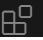
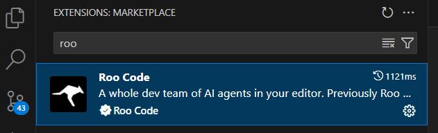
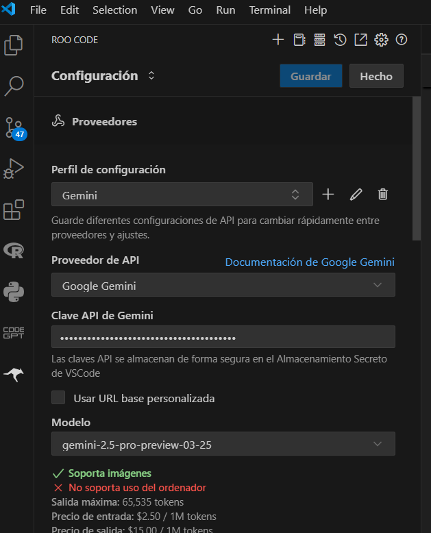

Asistente IA para programar en VSCode
Guía Paso a Paso para usar un asistente de Inteligencia Artificial en Visual Studio Code
Introducción
¿Buscas una forma de utilizar la inteligencia artificial para ayudarte en tu trabajo sin gastar dinero? Este tutorial te mostrará cómo configurar Visual Studio Code con la extensión Roo Code y conectarla al modelo de inteligencia artificial Gemini 2.5 de Google totalmente gratis!. Esta es una excelente alternativa a herramientas de pago como Cursor o GitHub Copilot.
Visual Studio Code VSCode
Desde que surgió esto de la AI para hacer código cambié mi entorno habitual de trabajo que era Rstudio por VSCode. No fue algo inmediato, pero es que todo lo nuevo salía en Python así que me acostumbré a programar en VSCode. Al final los entornos de programación son parecidos, pero en cuanto te acostumbras a uno es dificil cambiar, nos cuesta mucho. El caso es que he probado algunas extensiones en VBCode, pero esta que os voy a decir es la que me ha parecido más sencilla de usar y que funciona realmente bien
Paso 1: Descarga e Instala Visual Studio Code
este es un paso obvio,
- Busca “VS code” en Google.
- Haz clic en el primer resultado para ir a la página de descarga.
- Descarga la versión para Windows (o tu sistema operativo) haciendo clic en el botón correspondiente.
- Ejecuta el archivo .exe descargado.
- Acepta el acuerdo de licencia y haz clic en “Siguiente” varias veces.
- Activa las opciones que te permiten abrir carpetas en Visual Studio Code con clic derecho.
- Haz clic en “Instalar” y espera a que finalice la instalación.
- Haz clic en “Finalizar” para abrir Visual Studio Code.
Paso 2: Instala la Extensión roo code
- Una vez abierto Visual Studio Code, busca el icono de Extensiones  en la barra lateral izquierda (generalmente es un cuadrado con otro cuadrado saliendo).
- En el buscador de extensiones, escribe “Roo code”.
- El primer resultado debería ser la extensión “Roo code”. el símbolo es un canguro, haz clic en ella.
- Haz clic en el botón “Instalar”.
- Si aparece una ventana preguntando si confías en la extensión, haz clic en “Confiar y continuar” o un botón similar.
- Verás el icono de Roo code en la barra lateral izquierda, lo que indica que la extensión se ha instalado correctamente.

Paso 3: Conecta Roo code a Gemini 2.5 a través de Open Router (Opción 1)
- Haz clic en el icono de Roo code en la barra lateral izquierda.
- En la interfaz de Roo code, haz clic en el botón grande “Open router”.
- Esto te redirigirá a la página de Open Router en tu navegador, donde deberás loguearte con Google, GitHub o crear una cuenta con tu correo electrónico.
- Una vez logueado, te aparecerá una solicitud de autorización. Puedes dejar el límite de crédito en blanco por ahora.
- Haz clic en “Autorizar”.
- Es posible que aparezca una alerta en Google Chrome. Haz clic en el botón “Open visual Studio code” para volver a la aplicación.
- En Visual Studio Code, haz clic en “Open” para completar la conexión entre Open Router y Roo code.
- Ve al engranaje de ajustes en la parte superior de la interfaz de Roo code.
- En la sección “Modelo”, verifica que esté seleccionado “Anthropic Claude Sonnet 3.7”. Este modelo no es gratuito, así que debes cambiarlo.
- Haz clic en el menú desplegable del modelo y busca “gemini 2.5 Pro”. Deberías ver “free” al final, indicando que es gratuito.
- Selecciona “gemini 2.5 Pro (free)”.
- Puedes explorar otros modelos gratuitos buscando “free” en el filtro.
- Cierra la ventana de ajustes.
Paso 4: Conecta Roo code directamente a Gemini a través de Google AI Studio (Opción 2)
- Si tienes problemas con Open Router o prefieres usar directamente Gemini, ve al engranaje de ajustes de Roo Code.
- Cambia el “Proveedor” de “Open router” a “Google gemini”.
- Haz clic en el botón “obtener clave Api de gemini”.
- Esto abrirá tu navegador en Google AI Studio.
- Haz clic en el botón azul “Explorar modelos”. Si no ves esta pantalla, podrías ver la interfaz de interacción con los modelos de Google.
- Haz clic en el botón “Get API key”. Si estás en la interfaz principal, busca la opción para crear una clave API.
- Selecciona el proyecto “gemini_appi” (generalmente estará por defecto). Si no aparece, el video sugiere dejar un comentario para ayuda.
- Haz clic en “Crear clave de API en un proyecto existente” y luego en “Crear clave de API”.
- Copia la clave API que se genera. Importante: No compartas esta clave con nadie.
- Vuelve a Visual Studio Code y pega la clave API en el campo “Clave Api de gemini” dentro de la configuración de Roo code.
- En la opción “Modelo” asegúrate de tener seleccionado “gemini 2.5 Pro” (debería aparecer ahora que has ingresado la clave).
- Haz clic en “Guardar” en la parte superior de la ventana de ajustes.

Paso 5: Comienza a Codificar con Gemini 2.5
- Haz clic en el botón “New task” (nueva tarea) en la interfaz de Roo Code (generalmente un icono de “+”).
- Se abrirá un campo de texto donde puedes escribir tus “prompts” o peticiones.
- Experimenta con los diferentes modos de Roo Code haciendo clic en el botón “code”. Por ejemplo, el “modo arquitecto” te ayuda a conceptualizar la estructura de tu aplicación.
- Escribe tu prompt describiendo lo que quieres crear. El video muestra un ejemplo de solicitar una calculadora web interactiva para un salón de belleza.
- Haz clic en el botón para enviar el mensaje.
- Lee las respuestas del modelo y colabora con él respondiendo a sus preguntas para refinar la aplicación.
- Si la respuesta inicial está en inglés, puedes intentar cambiar el “Language” (idioma) a español en la configuración de Roo code, aunque esto podría no cambiar el idioma del modelo directamente.
- Si experimentas errores con un proveedor (como Open Router saturado), puedes intentar cambiar al otro método de conexión (Google Gemini).
Paso 6: Interactúa y Refina tu Código
- Una vez que el modelo genere código, puedes pedirle que lo modifique, agregue funcionalidades o corrija errores.
- Utiliza la consola del navegador (clic derecho en la página web, “Inspect” o “Inspeccionar”, luego ve a la pestaña “Consola”) para identificar errores en tu aplicación web y enviárselos a Gemini para que los corrija.
- Roo Code puede funcionar de forma recursiva, buscando errores e implementando el código de manera inteligente.
- Puedes auto aprobar ciertas acciones de Roo Code en la configuración para que el proceso sea más automático, pero es importante revisar los resúmenes de las acciones.
- Roo Code puede incluso crear carpetas y mover archivos dentro de tu proyecto a través de tus peticiones.
Conclusión
Utilizar Gemini 2.5 con Roo Code en Visual Studio Code es una excelente manera de adentrarse en el mundo de la programación asistida por inteligencia artificial de forma gratuita. Recuerda que si bien estas herramientas son poderosas, requieren de tu guía y conocimiento para obtener los mejores resultados.
Nos vemo, un saludo!!